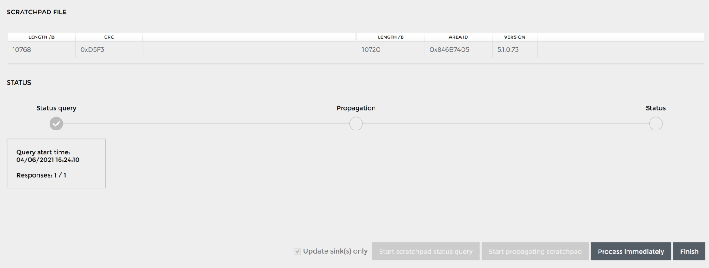

Status | Date | Doc Version | Applicable | Confidentiality |
| v1.3 | Wirepas Massive v5.1 WNT4.x | CONFIDENTIAL |
Introduction
This document describes the typical flow for Over The Air Programming v2 (OTAP) that is introduced with Wirepas Massive v5.1 release. It explains the new features of v5.1 OTAP v2 and how to perform OTAP using the Wirepas Network Tool (WNT) or the Wirepas MQTT Library.
Important Note: OTAP is a sensitive operation. In the worst case, where an incorrectly configured scratchpad is sent to the network, the end result might be a non-functional network leading to manual work of re-flashing of all the nodes in the network. Updating the nodes should be made with caution and strictly following the guidelines described in the following sections.
What you’ll learn
This document describes the Wirepas Massive Over The Air Programming (OTAP) v2 feature. It is targeted at both developers and users.
You will learn:
- Reason for new OTAP v2 in Wirepas Massive v5.1 release
- Interoperability with the previous versions
- Typical flows how the OTAP should be done
- How to make OTAP with the Wirepas MQTT library
What you’ll need
- Basic knowledge of Wirepas Massive, available from Wirepas Massive Concept document [1]
- Familiarity with the following two documents:
Why a new OTAP v2 in Wirepas Massive v5.1?
The new OTAPv2 does not change the overall mechanism of the OTAP (propagation and update flow) but improves the OTAP control for a more reliable and easy-to-control OTAP process in a network.
The improvements objectives are mainly to change the OTAP strategy from an implicit method to an explicit one. The improvements are localized in two main areas:
- The control of the propagation and the processing of OTAP images are now using the Network Persistent Data (NPD) mechanism available from the Wirepas Massive network instead of downlink messages using the Remote API. They are also explicit.
- The identification of a newer version is now explicit instead of implicit based on sequence number
It shall be also noted that the OTAPv2 relies on the fact that the sinks are the control point for the update (no node initiated OTAP anymore).
What is Network Persistent Data and what are the benefits?
NPD allows the spreading of shared information in a reliable manner inside the whole network and independently of the node's mode of operation. NPD is the mechanism used behind Application data configuration or Diagnostic control in the stack. The NPD’s main advantage is to be more reliable compared to Remote API as its propagation is part of the network signaling and the message is persistent in the network. It allows nodes that are not connected 100% of the time to the network to receive it. NPD has also the advantage of not consuming precious downlink communication in the Wirepas network.
Interoperability with the previous version and default mode
This new OTAP control mechanism can only be used if all the nodes in the network run at least the v5.1 stack version and the gateway has at least Wirepas Gateway drivers version v1.4.0.
In order to support migration to stack v5.1 but also the configuration with the older backend, the Wirepas Massive v5.1 still supports the previous legacy OTAP mechanism. It can also be used in mixed networks (called Legacy OTAP).
By default, the Wirepas Massive v5.1 is configured to support the OTAPv2 mechanism. In the case of a mixed network having v5.0 nodes, the sinks shall be configured in Legacy mode. This can be done via 2 options:
- If Wirepas Gateway driver v1.4.0+ are used by setting SetScratchpadTargetAndActionReq to
LEGACY_OTAP(see: https://github.com/wirepas/backend-apis/tree/master/gateway_to_backend#set-target-scratchpad-and-action ) - By Rebuilding the Dual-MCU application by setting the initial OTAP mode to LEGACY as shown below:
make app_name=dualmcu_app target_board=<your board> otap_force_legacy=yes
Note: This configuration allows to set the initial state to mainly cover the case where the Gateway Drivers are not up to date. If the Gateway drivers are later updated to a version supporting OTAP v5.1, the initial configuration can be modified via the Wirepas MQTT API.
After Legacy OTAP is selected the Legacy OTAP Mechanism documented in How to perform OTAP with Wirepas Massive v5.0 [5] is fully applicable.
More details about the Backward compatibility and interoperability can be found in Backward compatibility & Interoperability with previous versions chapter.
Typical OTAP Flow with Wirepas Massive v5.1
This chapter describes the typical OTAP flow for a successful OTAP with Wirepas Massive OTAPv2
Note: This flow assumes that the Wirepas stack remains radio compatible (ie: v5.1.x to v5.1.x or only application update) which is usually the case.
The update is done in 2 steps:
- Step 1:Update Network nodes
- Step 2: Update sink(s)
Step1: Update network nodes

When the process starts, all the sinks and the rest of the nodes in the network have to be up and running. Used functions and related OTAP example scripts can be found from Wirepas MQTT Library.
- Upload new scratchpad to sink(s). All sinks in the whole network should have the same scratchpad, with the same sequence number to make sure that the whole network will be updated.
- Set the OTAP action to PROPAGATE_AND_PROCESS. The scratchpad starts to spread in the network immediately after that. When a node receives a complete scratchpad, it processed it and restarts with the new image automatically.
- Check if the scratchpad has been updated on all nodes by sending the periodic Remote API MSAP Scratchpad Status requests [4] to all target nodes. Note that it takes time while the scratchpad spreads to the network. So the polling should not be started immediately after the propagate call, but wait for a period. The period is relative. If the network is very large, it takes hours before all the devices have been updated.
- Done!
Step2: Update Sink(s)
The sinks are updated separately from the rest of the network. That is because sinks usually have different software and it does not make sense to spread that to the rest of the network inside a scratchpad.
When the process starts, all the sinks in the network have to be up and running. Used functions and related OTAP example scripts can be found from Wirepas MQTT Library.
- Upload new scratchpad to sink(s). All sinks in the whole network should have the same scratchpad. The scratchpad should have sequence number 0. Number 0 means that the scratchpad is not spread to the rest of the network. But with the new 5.1 control mechanism, any sequence could work as well. As long as this sequence is not set as a target, it will not be propagated to the network.
- Send a process scratchpad locally command to the sink. This starts the update process immediately.
What happens after an OTAP
After an OTAP, the nodes are running the latest version of the software. By default, the latest scratchpad with its associated sequence number remains in the device’s flash memory.
If the OTAP action is left to PROPAGATE_AND_PROCESS as in the example flow, new devices that join the network will automatically get the latest software and be updated.
If it is needed, that the OTAP is disabled in the network, the action should be set to NO_OTAP. But in this case, OTAP must be enabled again to update the new nodes by setting the action back to PROPAGATE_AND_PROCESS.
Here are few recommendations to ensure proper OTAP management:
- Make sure that you have different Network and Bootloader keys between development and production networks.
- Always update an entire network and not only a subset of the network, especially if you have some mobile nodes.
The sequence number and CRC with OTAPv2
As seen earlier OTAPv2 has been improved to move from an implicit identification of a newer OTAP based on Sequence Number to an explicit identification of a newer image using both Sequence Number plus CRC.
The sequence number is kept to ensure backward compatibility in Legacy mode but is not used to identify a newer scratchpad as per in the previous version.
Identification of a newer scratchpad is explicit and consist of:
- an 8-bit Sequence Number that can be selected between 1-254. Number 0 has a special purpose. With the number 0, the scratchpad doesn’t start to spread to the network from the sink. So sequence number 0 can be used to update the sinks only. Number 255 is disabled for legacy reasons and thus should not be used.
- a 16-bit CRC computed automatically on the OTAP image to be propagated.
It means that a newer image is now identified explicitly via both a given Sequence Number plus a specific CRC avoiding some unsolicited exchange of scratchpad as in the previous versions.
OTAP Actions
Like for OTAP Scratchpad propagation, the OTAP actions are now explicit and rely on the NDP mechanism. OTAP has 5 different actions to control the spreading and processing of the scratchpad.
Action | Description | Associated parameters |
NO_OTAP | With the NO_OTAP action, the OTAP process is disabled. | No parameters |
PROPAGATE_ONLY | With the PROPAGATE_ONLY action, the scratchpad is spread to the network, and the nodes stores it in their flash memory. However, the nodes do not process the scratchpad and thus not update the device. |
|
PROPAGATE_AND_PROCESS | The default mode. With the PROPAGATE_AND_PROCESS action, the nodes process the scratchpad immediately after they have received it. The device boots immediately after the successful processing with the new software. If a new device joins the network, it will receive the latest scratchpad immediately and update itself. |
|
PROPAGATE_AND_PROCESS_WITH_DELAY | With PROPAGATE_AND_PROCESS_WITH_DELAY, the scratchpad is spread to the network first and processed after a pre-defined delay. The delay is given together with the action. Delay countdown starts after the device has received the scratchpad. |
|
LEGACY | With LEGACY action, the network can be updated using old OTAP commands that are used with stack versions 5.0 and older. LEGACY action is used to migrate all the node in the network to use version 5.1 (and newer). After that, the LEGACY action should not be used. | No parameters |
Backward compatibility & Interoperability with previous versions
Because the new OTAP mechanism uses NPD to spread OTAP state, older nodes than with stack version 5.1 cannot use it. The following table shows different cases and the used OTAP version. “x.x” means that the node has a stack version on 5.0 or older or that the gateway or the backend does not support the new OTAP.
Case Number | Backend | Linux Gateway version | Sink stack version | Nodes stack version | Used OTAP version |
1 | Backend 5.1 compatible / WNT 4.0 | Gateway 1.4.0 | v5.1 | All v5.1 | OTAP v2 |
2 | v5.1 | Some v5.0 | LEGACY | ||
3 | v5.0 / v4.x | Some v5.0 / v4.x | LEGACY | ||
4 | Gateway 1.2.x/1.3.x | v5.1 | All v5.1 | LEGACY | |
5 | v5.1 | Some v5.0 | LEGACY | ||
6 | v5.0 / v4.x | Some v5.0 / v4.x | LEGACY | ||
7 | Backend 5.0 compatible / WNT 3.0 | Gateway 1.4.0 and older | v5.1 / v5.0 / v4.x | v5.1 / v5.0 / v4.x | LEGACY |
The previous table shows 7 different possibilities, in which different versions different parts in the system might be. The following table shows, how to solve each case:
Case Number | Solution for the update |
1 | This is the default case when starting to develop with v5.1. There is no legacy in the system. OTAP mode is set to NO OTAP and the new OTAP v2 should be used. |
2 | If some of the nodes do not have the v5.1 stack version:
|
3 | The sink does not support the new OTAP.
|
4 | All the nodes are up to date together with the backend, but for some reason, the gateway is not. Update the gateway to the latest version, if possible.
|
5 | In this case, a new sink is added to an old gateway
|
6 | In this case, only the backend is updated and supports the new OTAP.
|
7 | If the backend does not support the new OTAP v2, it should be updated. The WNT should be updated to the latest Y.Y version. When this is done, continue to right case 1-6. |
Dual-MCU App on the sink should be updated simultaneously with the stack to the v5.1 version. This prevents interoperability issues.
How to make an OTAP with Wirepas MQTT Library in 5.1 networks
An example script, how to do the an OTAP in a v5.1 networks can be found from:
https://github.com/wirepas/wirepas-mqtt-library/blob/main/examples/example_otap.py
The MQTT Library tool can be used to update a network via MQTT broker (and gateways). However, it is meant to be used as an example, how to run the OTAP from a backend.
It can be run with the following command:
python
example_otap.py --host 192.168.1.1 --port 8883 --username
USERNAME_TO_BROKER -pw PASSWORD --network 0x323232 --file
my_scratchpad.otap immediately
This command will update a network with an address 0x323232 with my_scratchpad.otap. Host, port, username and, pw are related to the used MQTT broker. Immediately is the command and it means that the scratchpad is spread to the network and processed immediately when a node receives it. The possible actions are:
sink_only, propagate_only, immediately, delayed
The script connects to the MQTT broker.
wni = WirepasNetworkInterface(args.host, args.port, args.username, args.password)
Then it creates an object that can control all the sinks that has Wirepas Mesh network address 0x323232:
otapHelper = WirepasOtapHelper(wni, args.network)
Then it loads the scratchpad to all the sinks.
otapHelper.load_scratchpad_to_all_sinks(args.file)
After the upload, the script starts the OTAP process using the set action:
otapHelper.set_propagate_and_process_scratchpad_to_all_sinks()
Note
that the API generates the sequence number automatically. The gateway
takes the CRC from the scratchpad. They are copied automatically to
the NPD, when the set_propagate_and_process_scratchpad_to_all_sinks() is called.
No more actions are needed and the process continues independently until all the devices have been updated in the network. When the nodes get the scratchpad, they process it and restart with the new application. If it is wanted to be known, have all the devices been updated, there are two options:
- After the restart, nodes send a notification that it has the new sequence number
- The devices are polled using
otapHelper.send_remote_scratchpad_status()
It has to be remembered that both of these generate traffic to the network and thus might delay the OTAP process.
How to make an OTAP with Wirepas network Tool v4.1
The WNT Client supports OTAP to update the Wirepas Massive stack and/or application firmware to the node devices and to the sinks. In the WNT Client, go to Settings → Node Update page where you can find the OTAP control that is described below.
Running OTAP on live production networks will cause at least some downtime for the whole network (due to new scratchpad dissemination and update of the nodes to use new scratchpad) even if everything would go as planned.
This version of Wirepas Network Tool also support the previous OTAP version, thanks to the Legacy OTAP option that can be selected, as detailed below.
OTAP v2
OtapV2 requires all nodes to be Wirepas Massive v5.1 as described in the Backward compatibility & Interoperability with previous versions chapter.
Check network status
In order to understand the network status and the currently deployed OTAP scratchpad in the network, the query is done to the network to fetch this data from the network. To start this query phase, you can select
“Run Once” or “Start Continuous”.
WNT will trigger in this query phase with Remote API scratchpad status requests (MSAP Scratchpad Status Requests) to the network and collect the responses coming from the nodes and sink(s) in the network. Start continuous will send this same query every 3 minutes.
Fetching this information can take tens of minutes. Note that querying continuously (Start continuous) prevents you from doing node configurations while a query is running.
The STATUS part in the Update window shows you the number of sinks and nodes in the network and the percentage (and quantity) of sinks and nodes online.
In the NODES you can see the details of the nodes and sinks in the network, e.g. the Wirepas Massive firmware version, Application firmware version, and scratchpad details (scratchpad sequence number, Area IDs).
The target of this preparation is to get confirmation that your network is ready to make an OTAP. If in this phase you have many nodes and sinks offline, or a Wirepas stack compatibility break, further investigation must be done to finally have all the nodes and sinks in the network before moving to the next phase.
Loading the scratchpad file to WNT
A new scratchpad is needed in this phase. The scratchpad is generated using Wirepas SDK and it can contain application firmware (multiple), Wirepas stack firmware, or both. You can use either Browse the OTAP-image in your computer/network or directly write the path for the OTAP image and then press Load. The scratchpad gets loaded to WNT client and you will see the details of the loaded scratchpad image under the Scratchpad File section. In this phase nothing gets loaded to the network.
Now you need to check that the nodes you target with this new scratchpad, the firmware and the application Area ID match the loaded OTAP files firmware and application Area IDs (see next figure).
WNT will analyze the new scratchpad image and then will highlight the nodes which will be updated by comparing the nodes' Area ID with the new scratchpad contained Area ID (please check the time of the latest data from the node in Information Updated -column).
You will see the outcome of this in NODES view WILL BE UPDATED (True=will be updated, False=will not be updated). When everything looks good, pressing Continue will proceed to the Process page.
Loading the new scratchpad to the network
In this phase, the new scratchpad will be propagated to the Wirepas Massive network.
Update sink(s) only checkbox applies the update to only sinks in this network (=the new scratchpad will be loaded only to the sinks in the network with sequence number 0).
By default and to make an immediate update, just check the “Automatic update” checkbox, and the steps propagation and activation will be performed all in once, without user intervention.
Make sure to select the OTAP v2 method, and then click on “Start Update”. The propagation of the new scratchpad starts immediately, followed by activation when the node receives the new scratchpad. Note that by starting this phase, you need to proceed with the OTAP process to the end.
All the updated nodes will reboot during activation, and take the new scratchpad into use, this might take a few minutes. At the end of the activation process, the status is queried again from the nodes. This phase is used to see that all the wanted nodes were updated.
Once the final status is acquired, click on “Finish” to close the OTAP process and return to the main update page..
Note: you cannot Finish the process while Activation phase is ongoing. The Finish button is only enabled after the activation time has triggered and nodes are taking the new scratchpad into use.
Note: In case the “Automatic update” box is unchecked, the “Delay” parameter appears :
This delay allows to postpone the application of the scratchpad sequence, between 10 minutes and 1 day.
Sink only OTAP
Concerning the Sink only OTAP, the process is quite the same. Once the box “Update sink(s) only” is checked Start scratchpad status query and Process immediately will check the scratchpad status and send the new scratchpad to the sinks. At the end, the status is verified one more time.

Legacy OTAP
To be able to perform an OTAP v2, the network must run at least Wirepas Mesh Stack v5.1. However, it is possible to make a Legacy OTAP with WNT client V4.0 as follow.
Clicking “Set to legacy” button will send a messages to sinks that set the scratchpad action to Legacy.

The button “Disable OTAP” put all nodes in “NO_OTAP” scratchpad action, which means that even if the nodes receive a new scratchpad, it won’t be processed. It mainly avoid issues related to Legacy Otap; if a node with a more recent scratchpad join a network where all nodes have a previous scratchpad version, all the nodes process the incoming new scratchpad. Now, if their status is set to ‘NO_OTAP’, they won’t process anything, until this option is changed.
In WNT client, nodes presenting “NO_OTAP” can of course be updated by the same process described in this document.
Note : The backend will always set the correct action needed for the OTAP. It means that if the backend requires an OTAP v2 and the action is manually set to Legacy, the OTAP v2 will be performed.
This may take a few seconds. To ensure the command was successfully received by the node, click on “Run Once” or “Start Continuous”.
When all status are corrects, you can load the scratchpad file and click “Continue” to pass to next phase.
Before starting propagating scratchpad, make sure the “Legacy OTAP” method is selected.
Once the propagation step is achieved, set the Activation delay as you wish (minimum is 4 minutes), and the sequence. WNT client will calculate recommended sequence that should be used for update unless there is need to use another sequence. The sequence must be set as described in the document How to perform OTAP with Wirepas Massive v5.0 [5].
Then run “Start Update”.
Once activation is over, the status is get once more, to be sure the Firmware and/or the application has been properly updated.
For more information about Legacy OTAP, please refer to How to perform OTAP with Wirepas Massive v5.0 [5].
References
[1] Wirepas Massive Concept document
[2] Wirepas Massive OTAP Application Note
[3] Wirepas Massive Flash structure and Bootloader application note
[4] Wirepas Mesh Remote API Reference Manual
[5] How to perform OTAP with Wirepas Massive v5.0
Revision History
Date | Version | Notes |
v1.0 | The first version. | |
v1.1 | Added WNT4 OTAP | |
v1.2 | Fixed broken link | |
v1.3 | Added WNT4.1 OTAP |